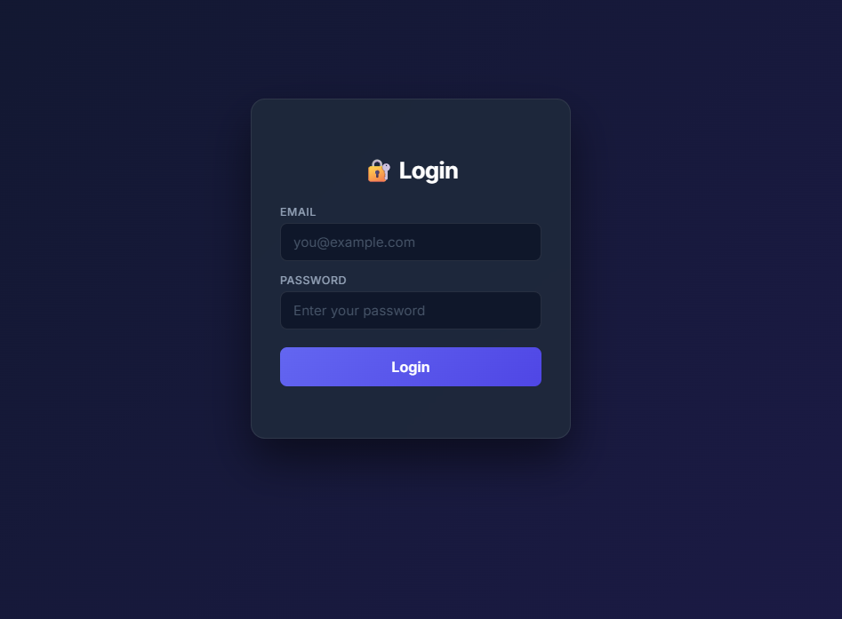
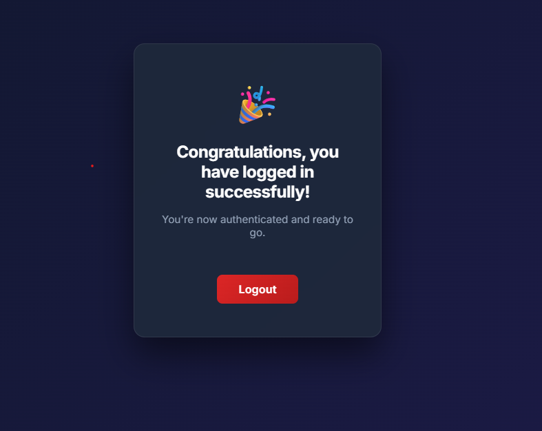

Learning backend development from the ground up
Hi, I’m Sipho. I’m a developer who’s been learning backend development, and like a lot of people starting out, I realized something...
A lot of tutorials show you *what* to do, but don’t really explain *why* things work.
I decided to start this series to help entry-level developers understand the fundamentals properly. I focus on explaining concepts in a simple and relatable way using analogies, because I believe coding shouldn’t feel complicated or intimidating. As Einstein said, "If you can't explain it simply, you don't understand it well enough."
I also want to emphasize that I'm no expert, and I'm learning as I go, and as I continue to learn, I will update this series with new insights and improvements.
Also, I believe teaching helps me learn better too.
Think of an app like a restaurant:
The backend is responsible for:
Example:
Imagine you open an app and click a button that says "View Users".
So even though you only clicked a button, a lot of things happened behind the scenes. That’s the backend doing its job.
Now you may be asking, "What is a server?", and this is very important as the server is a crucial part of the backend. A server is responsible for handling client requests and responses.
The technical definition of a server is a system (hardware or software) that listens for incoming network requests and provides responses to clients over a network.
I like to think of a server as "someone" who "serves" responses to the client based on the client's request. So when you click the "View Users" button, the server is the one who processes that request and sends back the user data to the frontend.
When your app talks to a server, it sends a request. HTTP methods tell the server what you want to do.
Think of it like:
Click a button to see what happens...
These responses are shown in JSON format. While there are other response formats, we will focus on JSON since it is the most commonly used in modern web applications.
Now... it took me a while to understand what an API is, and it wasn't until I started building projects that I really grasped the concept. So let's break it down.
An API (Application Programming Interface) is a set of rules that allows different software applications to communicate with each other. In the context of web development, APIs allow the frontend and backend to interact. It is the "defined behaviour" of the server that the frontend can use to request data or perform actions.
When you click a button on the frontend, it sends an HTTP request to the backend's API. The API defines how the frontend can request data and what kind of responses it can expect from the backend.
Simple analogy:
Think of an API like a restaurant system:
The menu shows what is available, the API handles the communication, and the backend does the actual work.
The waiter doesn’t cook the food — they just carry requests and responses between you and the kitchen.
I like to think of an API as a set of rules that live on the server, which dictate how the server should behave in terms of handling requests and responses through an API endpoint URL.
Example:
So when you click the "View Users" button, the frontend sends a request to the API endpoint URL (e.g. /api/users), and the API defines how the server should respond to that request (e.g. by fetching user data from the database and sending it back in JSON format).
An API endpoint URL is a specific address on the server that you can send a request to. Each endpoint represents a specific action, like getting users or creating a new account.
Example:
GET http://localhost:8000/users
When this request is sent, the server looks for the /users endpoint,
processes the request, and sends back a response (usually in JSON format).
Connecting back to our analogy:
If the API is like a restaurant:
Now that we understand the basics, let's get our hands dirty and build a simple API endpoint using Python and FastAPI. This will be a very basic example to help us understand how to create an API endpoint and test it.
Step 1: Open your code editor
Open your code editor (like VS Code), and create a new folder for your project.
For example:
backend-basics
Step 2: Open a terminal
Open a terminal inside your project folder.
Step 3: Install the required packages
Make sure you have Python installed. Then run:
python -m pip install fastapi uvicorn
These tools will allow us to build and run our backend server.
FastAPI is a backend framework. A framework is basically a set of tools that helps you build something faster instead of starting from scratch.
Think of it like setting up a lemonade stand. Instead of building the table, cups, and signs yourself, FastAPI gives you those pieces already prepared, while you just focus on serving the lemonade.
Uvicorn is the server that runs your application. It listens for requests (like someone placing an order) and makes sure your FastAPI app responds to them.
So:
Step 4: Create your server file
Inside your folder, create a file called:
main.py
This file will contain your backend code.
Step 5: Add your first endpoint
# Import FastAPI (the framework we are using)
from fastapi import FastAPI
# Create an instance of the FastAPI application
# Think of this as setting up your backend app
app = FastAPI()
# Define a GET endpoint at /users
# This means when someone sends a GET request to /users, this function will run
@app.get("/users")
# This is the function that will execute when the endpoint is called
def get_users():
# Return a list of users
# FastAPI automatically converts this into JSON format
return ["Sipho", "John", "Sarah"]
This creates a simple API endpoint at /users.
Step 6: Run the server
In your terminal, run:
uvicorn main:app --reload
This starts your server locally.
Notice that it's running on port 8000 which is the default port for Uvicorn. We can change this if we want, but for now, we'll stick with 8000.
Step 7: Test your endpoint in the browser
First, in your browser, go to:
http://localhost:8000/users
You should see a response like:
["Sipho", "John", "Sarah"]
This means your server is running and your endpoint is working correctly.
Step 8: Explore your API with Swagger
Now go to:
http://localhost:8000/docs
This opens an interactive API interface called Swagger UI.
Swagger allows you to see all your available endpoints and test them directly from your browser without writing any code. Quite handy for testing and debugging your API.
Find GET /users, click on it, and then click Execute.
You’ll see the same response returned by your server.
We've now built and tested our first real backend endpoint 🎉
So far, we’ve used GET requests to retrieve data.
Now, let’s learn how to send data to the server using a POST request.
POST is commonly used when creating something new, like a user account.
Step 1: Add this to your existing code
# Now we Import BaseModel from the Pydantic library
from fastapi import FastAPI
from pydantic import BaseModel
app = FastAPI()
# Define the structure of the data we expect
class User(BaseModel):
name: str
# Create a POST endpoint
@app.post("/users")
def create_user(user: User):
return {
"message": "User created successfully",
"user": user.name
}
Pydantic is a Python data validation library. We use BaseModel from Pydantic which is a declarative schema which allows us to define how our data should look like. Pydantic validates we input against this schema and ensures that the data we receive is in the correct format.
What’s happening here?
Step 2: Test it using Swagger
Go to:
http://localhost:8000/docs
Find POST /users and click on it.
Click "Try it out", then enter:
{
"name": "Sipho"
}
Click Execute.
You should see a response like:
{
"message": "User created successfully",
"user": "Sipho"
}
What just happened?
This is how forms, sign-ups, and logins work in real applications.
You may notice that when you go to http://localhost:8000 in your browser,
you see a message like:
{"detail": "Not Found"}
This is because we haven’t defined an endpoint for the root URL (/).
Our current endpoint is:
/users
So the correct address to use is:
http://localhost:8000/users
In backend development, the server only responds to routes (endpoints) that you have explicitly defined.
We can also add the root endpoint in our existing code / so that it works:
@app.get("/")
def root():
return {"message": "API is running"}
Now our main.py file should look like this:
# Import FastAPI (framework for building our API)
from fastapi import FastAPI
# Import BaseModel from Pydantic (used to define data structure)
from pydantic import BaseModel
# Create an instance of the FastAPI app (this is our server)
app = FastAPI()
# Define a GET endpoint at /users
# This runs when someone visits http://localhost:8000/users
@app.get("/users")
def get_users():
# Return a list of users (automatically converted to JSON)
return ["Sipho", "John", "Sarah"]
# Define the structure of the data we expect when creating a user
class User(BaseModel):
# The user must have a name, and it must be a string
name: str
# Define a POST endpoint at /users
# This runs when data is sent to the server to create a user
@app.post("/users")
def create_user(user: User):
# Return a confirmation message and the user's name
return {
"message": "User created successfully",
"user": user.name
}
# Define a root endpoint at /
# This runs when someone visits http://localhost:8000
@app.get("/")
def root():
# Simple message to show the API is running
return {"message": "API is running"}
Right now, our API can receive data, but it doesn’t actually store anything.
If we create a user and then check our users again, nothing changes. That’s because we are not saving the data anywhere.
Let’s fix that.
We will store users temporarily in memory using a list.
Step 1: Create a users list
# Temporary storage (in-memory) users = []
Also remove ["Sipho", "John", "Sarah"] from the GET /users endpoint and so we can start with an empty list.
This list will hold all users while the server is running.
Step 2: Update your endpoints
from fastapi import FastAPI
from pydantic import BaseModel
app = FastAPI()
# Temporary storage
users = []
# Define data structure
class User(BaseModel):
name: str
# GET all users
@app.get("/users")
def get_users():
return users
# POST create user
@app.post("/users")
def create_user(user: User):
users.append(user.name) # Add user to the list
return {
"message": "User created successfully",
"users": users
}
# Root endpoint
@app.get("/")
def root():
return {"message": "API is running"}
What’s happening now?
usersTry it out:
🎉 Our API can now store and return data!
This data is only stored temporarily in memory.
If you restart your server, all the users will be lost.
Try it:
The list will be empty again.
This is why real applications use databases — to store data permanently.
Why does this happen?
Because our data is stored in memory (RAM), not permanently.
When the server stops, everything in memory is cleared.
What this means:
This is why real applications use databases — to store data permanently.
There are many different database systems available, but we will use PostgreSQL.
PostgreSQL is a powerful and widely used open-source relational database management system.
It is used by many real-world applications to store and manage data reliably.
What PostgreSQL will help us do:
Instead of storing users in a temporary list, we will store them in a database.
This means even if we restart the server, our data will still be there.
To store our data permanently, we need to install a database system.
We’ll be using PostgreSQL.
You can download it here:
Follow the installation instructions for your operating system.
During installation, you may be asked to set a password — make sure you remember it.
Once installed, PostgreSQL will run on your computer and be ready to store data.
Now that PostgreSQL is installed, we need to connect our FastAPI application to it.
Step 1: Install the required package in the terminal
python -m pip install psycopg2-binary
This allows Python to communicate with PostgreSQL.
Step 2: Connect to the database
In your database.py file, add the following code to connect to PostgreSQL:
import psycopg2
# Create a connection to PostgreSQL
conn = psycopg2.connect(
host="localhost",
database="postgres",
user="postgres",
password="your_password"
)
# Create a cursor (used to run queries)
cursor = conn.cursor()
What’s happening here?
Think of the connection as opening a line of communication, and the cursor as the tool you use to send instructions.
You will also need to connect to the database using the terminal (psql) to create a table for storing users. Run the following command:
"C:\Program Files\PostgreSQL\18\bin\psql.exe" -U postgres
You will then be prompted to enter your password.
If successful, you will see:
postgres=#
This means you are connected to PostgreSQL and will be able to run SQL commands to create tables and manage your data.
We add this line in our main.py to import the database connection and cursor:
from database import cursor, conn
This is important because it allows our FastAPI application to communicate with the database.
The conn (connection) represents the link between our app and PostgreSQL,
and the cursor is what we use to send commands (queries) to the database.
Without this, our API would not be able to store or retrieve any data.
This endpoint allows us to send data to the server and store it in the database.
When we send a user's name, the API runs an SQL command to insert that data into the users table.
This endpoint retrieves all users from the database.
It runs a query to select all records from the users table and returns them.
# Import FastAPI (framework for building our API)
from fastapi import FastAPI
# Import BaseModel (used to define the structure of incoming data)
from pydantic import BaseModel
# Import database connection and cursor
from database import cursor, conn
# Create FastAPI app instance
app = FastAPI()
# Define the structure of the data we expect when creating a user
class User(BaseModel):
# User must have a name (string)
name: str
# POST endpoint → creates a new user in the database
@app.post("/users")
def create_user(user: User):
# Insert the user's name into the users table
cursor.execute(
"INSERT INTO users (name) VALUES (%s)",
(user.name,)
)
# Save (commit) the changes to the database
conn.commit()
# Return a confirmation response
return {
"message": "User created successfully",
"user": user.name
}
# GET endpoint → retrieves all users from the database
@app.get("/users")
def get_users():
# Run a query to get all users
cursor.execute("SELECT * FROM users")
# Fetch all results from the query
users = cursor.fetchall()
# Return the users
return users
# Root endpoint → simple check to confirm API is running
@app.get("/")
def root():
return {"message": "API is running"}
Start your server and go to:
http://localhost:8000/docs
1. Use POST /users to create a new user:
{
"name": "John"
}
2. Then use GET /users to retrieve all users.
You should now see your data coming from the database.
You can also verify your data directly in the database.
In your terminal (psql), run:
SELECT * FROM users;
You should see the users you added.
This confirms that your data is being stored in PostgreSQL.
We have now connected our FastAPI application to a real database.
When we send a POST request, the data is inserted into the database. When we send a GET request, the data is retrieved from the database.
This means our data is now stored permanently and will not disappear when the server restarts.
Previously, we stored data in a list (temporary storage). Now, we store data in a database (permanent storage).
We've connected to our database and everything is working fine, but there is one more issue we need to resolve before moving on.
Currently, in our database.py file, we have our PostgreSQL password written directly in the code 😬
This is a security risk, because anyone who has access to your code can see your database credentials and potentially access your data.
Thankfully, we can solve this using environment variables (a .env file).
This allows us to store sensitive information like passwords outside of our code.
python -m pip install python-dotenv
This package allows us to load environment variables from a .env file.
In your project folder, create a file called .env and add:
DB_HOST=localhost DB_NAME=postgres DB_USER=postgres DB_PASSWORD=your_password
# Import required libraries
import psycopg2
import os
from dotenv import load_dotenv
# Load environment variables from .env file
load_dotenv()
# Connect using environment variables
conn = psycopg2.connect(
host=os.getenv("DB_HOST"),
database=os.getenv("DB_NAME"),
user=os.getenv("DB_USER"),
password=os.getenv("DB_PASSWORD")
)
# Create a cursor
cursor = conn.cursor()
os?
The os module is a built-in Python library that allows us to interact with our system.
In this case, we use os.getenv() to read values from our environment variables.
For example:
os.getenv("DB_PASSWORD")
This retrieves the database password from the .env file instead of hardcoding it in our code.
Make sure you add .env to your .gitignore file so your credentials are not uploaded to GitHub.
.env
Our code is now more secure and ready for real-world use.
So far, we have only stored user names in our database. But in a real application, we would also want to store passwords so users can securely log in.
We need to update our User model to include an email and password.
class User(BaseModel):
name: str
email: str
password: str
We include email because it is unique for each user and will be used for logging in. Users can have the same name, but they cannot have the same email.
Our users table currently only stores names. We need to add email and password fields.
In your PostgreSQL terminal, run:
ALTER TABLE users ADD COLUMN email TEXT, ADD COLUMN password TEXT;
Then run SELECT * FROM users; to see the updated table structure. You should now see new empty columns for email and password.
We should never store passwords as plain text. Instead, we use hashing. Run the following command to install the necessary library for hashing passwords:
python -m pip install passlib[bcrypt]
Passlib is a library that provides secure password hashing. The [bcrypt] part specifies that we want to use the bcrypt hashing algorithm, which is widely regarded as secure for password hashing. If a user enters 123456 the hashed password will look something like this:
$2b$12$KIXQJHj8u1r5Z55u1e7uO8z5y5v5u1e7uO8z5y5v5u1e7uO8z5y5v
This is what will be stored in the database, and every time the user tries to log in. Passlib will hash the entered password and compare it to the stored hash to verify if they match.
This installs a library that helps us securely hash passwords.
You may encounter errors when using passlib with certain Python versions.
For example, newer versions of bcrypt may not be fully compatible with passlib, which can cause unexpected errors during hashing.
To resolve this, install a stable version:
python -m pip install bcrypt==4.0.1 passlib[bcrypt]==1.7.4
This ensures compatibility and prevents hashing errors.
In your main.py, add:
from passlib.context import CryptContext pwd_context = CryptContext(schemes=["bcrypt"], deprecated="auto")
pwd_context is an object that provides methods for hashing and verifying passwords using the bcrypt algorithm.
Simply put, pwd_context allows us to easily hash passwords before storing them and to verify passwords during login without having to worry about the underlying hashing logic.
Before saving the password, we hash it.
@app.post("/users")
def create_user(user: User):
# Hash the password before storing it
hashed_password = pwd_context.hash(user.password)
cursor.execute(
"INSERT INTO users (name, email, password) VALUES (%s, %s, %s)",
(user.name, user.email, hashed_password)
)
conn.commit()
return {
"message": "User created successfully",
"user": user.name
}
Now, when we create a user, the password is hashed before being stored in the database, as seen by hashed_password. This means that even if someone gains access to our database, they will not see the actual passwords, only the hashed versions, which are not reversible.
Let's start the server by running:
uvicorn main:app --reload
Enter this URL in your browser to access Swagger UI:
http://localhost:8000/docs
Use POST /users and send:
{
"name": "john",
"email": "john@email.com",
"password": "123456"
}
Then use GET /users to retrieve all users.
You should see something like this:
[
[
1,
"john",
"john@email.com",
"$2b$12$KIXQJHj8u1r5Z55u1e7uO8z5y5v5u1e7uO8z5y5v5u1e7uO8z5y5v"
]
]
Notice that the password is not stored as "123456", but as a long hashed string. This is how real applications protect user credentials.
We have the user id, name, email, and the hashed password. Excellent so far. Now we need to see if these credentials are stored in our database correctly.
Connect to your PostgreSQL terminal, and run the following command to view the users table:
SELECT * FROM users;
Now we should see John's id, name, email and hashed password in the database. Great! This means our API is successfully storing user credentials in a secure way.
You will see that the password is not stored as plain text, but as a hashed value.
This is how real applications protect user credentials.
Next, we will build authentication, which is the process of verifying a user when they try to log in.
This will involve checking if the user exists in the database and verifying that their password matches the stored hashed password.
In simple terms, authentication answers the question: “Is this user who they say they are?”
It's like entering a football stadium and getting your ticket scanned or checked to see if it's valid. If the ticket is valid, you are allowed in; if not, you are denied entry.
To authenticate a user, we need two things:
The email helps us find the user in the database, and the password helps us verify that it is really them.
When a user logs in, they don’t need to send their name — only their email and password.
class LoginUser(BaseModel):
email: str
password: str
Now we create a POST /login endpoint that will handle login requests.
@app.post("/login")
def login(user: LoginUser):
# Find user by email
cursor.execute(
"SELECT * FROM users WHERE email = %s",
(user.email,)
)
db_user = cursor.fetchone()
# If user does not exist
if not db_user:
return {"error": "User not found"}
# Get stored hashed password
stored_password = db_user[3]
# Verify password
if not pwd_context.verify(user.password, stored_password):
return {"error": "Invalid password"}
# If everything is correct
return {"message": "Login successful"}
First, we check if a user with that email exists in the database.
If the user exists, we compare the password they entered with the hashed password stored in the database.
If they match, the user is authenticated.
Go to:
http://localhost:8000/docs
Use POST /login and enter:
{
"email": "john@email.com",
"password": "your_original_password"
}
If the credentials are correct, you will receive a success response.
{
"message": "Login successful"
}
If not, you will receive an error message.
Notice that we never compare plain passwords directly.
Instead, we use pwd_context.verify() to safely compare the entered password with the stored hashed password.
We have now built an operating authentication system 🎉
The application can verify users and allow access only if their credentials are correct.
However, there is one problem…
Once the user logs in, the application does not remember them.
In the next section, we will solve this by introducing tokens and sessions.
We have now built an authentication system that can verify users using their email and password.
But there is still one important problem...
Once a user logs in successfully, the application immediately forgets them.
This means the user would have to log in again every time they try to access a protected route.
It's like going to a football stadium and having to show your ticket every time you want to enter a different area of the stadium. It would be very inconvenient!
This is where tokens and sessions come in.
Think of a token like a wristband at a football stadium or music festival.
First, your ticket is scanned at the entrance (authentication).
Once you are verified, you are given a wristband (token).
Instead of showing your ticket every few minutes, you simply show the wristband to prove you already entered legitimately.
In web applications, a token works the same way.
This is called an access token, and it allows users to stay authenticated without having to log in repeatedly.
A session is the period during which the application remembers a logged-in user.
Think of it like staying inside the stadium after entering.
As long as your wristband is valid, security allows you to move around without checking your ticket again.
Once the event ends or the wristband expires, you must authenticate again.
Tokens usually expire after a certain amount of time for security reasons.
If someone steals a token, they should not be able to use it forever.
Expiry helps reduce the risk of unauthorized access.
Sometimes applications use two tokens:
Think of it like having:
Refresh tokens are mostly used for complex apps that have larger security requirements. For simplicity, we will focus on access tokens in this section.
We will use JSON Web Tokens (JWT) to create and verify tokens.
python -m pip install python-jose[cryptography]
This library allows us to securely generate and verify JWT tokens.
Python-JOSE is a popular library for handling JWTs in Python. It provides functions to encode and decode JWT tokens, as well as to handle token expiration and signing. The [cryptography] part ensures that we have the necessary cryptographic algorithms available for secure token generation and verification.
Think of Python-JOSE like a machine that creates and checks VIP wristbands at a stadium.
When a user logs in successfully, the machine creates a special wristband (JWT token) containing information about that user.
The machine can also later inspect the wristband to make sure:
The [cryptography] part provides the security technology needed to securely create and verify those wristbands so they cannot easily be forged or tampered with.
In main.py, add:
from jose import JWTError, jwt from datetime import datetime, timedelta
We import datetime and timedelta so we can work with time.
datetime gives us the current date and timetimedelta allows us to add or subtract timeIn our authentication system, we use them to set an expiry time for the token.
For example, if a token should expire after 30 minutes, we take the current time and add 30 minutes to it.
Think of it like giving someone a parking ticket that expires after a certain amount of time.
SECRET_KEY = "your_secret_key" ALGORITHM = "HS256" ACCESS_TOKEN_EXPIRE_MINUTES = 30
SECRET_KEY → used to sign the token securelyALGORITHM → defines how the token is encryptedACCESS_TOKEN_EXPIRE_MINUTES → controls how long the token stays valid
In real applications, the SECRET_KEY should be stored in a .env file.
def create_access_token(data: dict):
# Copy user data
to_encode = data.copy()
# Set token expiry time
expire = datetime.utcnow() + timedelta(minutes=ACCESS_TOKEN_EXPIRE_MINUTES)
# Add expiry to token data
to_encode.update({"exp": expire})
# Create JWT token
encoded_jwt = jwt.encode(
to_encode,
SECRET_KEY,
algorithm=ALGORITHM
)
return encoded_jwt
Instead of forcing users to log in repeatedly, we give them a token that proves they already authenticated successfully.
The server can then verify this token before allowing access to protected routes.
Update your login endpoint:
token = create_access_token({"sub": user.email})
return {
"access_token": token,
"token_type": "bearer"
}
Once the user logs in successfully, the server now returns an access token.
Go to:
http://localhost:8000/docs
Use POST /login.
If the credentials are correct, you will receive a JWT token.
Now we can create protected routes that only authenticated users can access.
from fastapi import Depends, HTTPException
from fastapi.security import HTTPBearer, HTTPAuthorizationCredentials
security = HTTPBearer()
def verify_token(
credentials: HTTPAuthorizationCredentials = Depends(security)
):
token = credentials.credentials
try:
payload = jwt.decode(
token,
SECRET_KEY,
algorithms=[ALGORITHM]
)
return payload
except JWTError:
raise HTTPException(
status_code=401,
detail="Invalid token"
)
The server receives the token, decodes it, and checks whether it is valid and not expired.
If the token is valid, access is granted.
If not, the request is rejected.
@app.get("/protected")
def protected_route(payload: dict = Depends(verify_token)):
return {
"message": "You are authenticated",
"user": payload["sub"]
}
At this stage, your main.py file should look something like this:
from fastapi import FastAPI from pydantic import BaseModel from database import cursor, conn from passlib.context import CryptContext from jose import JWTError, jwt from datetime import datetime, timedelta from fastapi import Depends, HTTPException from fastapi.security import HTTPBearer, HTTPAuthorizationCredentials # Create HTTP bearer security security = HTTPBearer() # JWT settings SECRET_KEY = "your_secret_key" ALGORITHM = "HS256" ACCESS_TOKEN_EXPIRE_MINUTES = 30 # Password hashing setup pwd_context = CryptContext( schemes=["bcrypt"], deprecated="auto" ) # Create FastAPI app app = FastAPI() # User registration model class User(BaseModel): name: str email: str password: str # Login model class LoginUser(BaseModel): email: str password: str # Create new user @app.post("/users") def create_user(user: User): # Hash password before storing hashed_password = pwd_context.hash(user.password) # Insert user into database cursor.execute( "INSERT INTO users (name, email, password) VALUES (%s, %s, %s)", (user.name, user.email, hashed_password) ) conn.commit() return { "message": "User created successfully", "user": user.name } # Retrieve users @app.get("/users") def get_users(): cursor.execute("SELECT * FROM users") users = cursor.fetchall() return users # Root route @app.get("/") def root(): return { "message": "API is running" } # Login route @app.post("/login") def login(user: LoginUser): # Find user by email cursor.execute( "SELECT * FROM users WHERE email = %s", (user.email,) ) db_user = cursor.fetchone() # User not found if not db_user: return { "error": "User not found" } stored_password = db_user[3] # Verify password if not pwd_context.verify( user.password, stored_password ): return { "error": "Invalid password" } # Generate JWT token token = create_access_token({ "sub": user.email }) return { "access_token": token, "token_type": "bearer" } # Create JWT token def create_access_token(data: dict): to_encode = data.copy() # Create token expiry expire = datetime.utcnow() + timedelta( minutes=ACCESS_TOKEN_EXPIRE_MINUTES ) # Add expiry to payload to_encode.update({ "exp": expire }) # Encode JWT token encoded_jwt = jwt.encode( to_encode, SECRET_KEY, algorithm=ALGORITHM ) return encoded_jwt # Verify JWT token def verify_token( credentials: HTTPAuthorizationCredentials = Depends(security) ): token = credentials.credentials try: # Decode token payload = jwt.decode( token, SECRET_KEY, algorithms=[ALGORITHM] ) return payload except JWTError: raise HTTPException( status_code=401, detail="Invalid token" ) # Protected route @app.get("/protected") def protected_route( payload: dict = Depends(verify_token) ): return { "message": "You are authenticated", "user": payload["sub"] }
Bearer YOUR_TOKEN
You should now be able to access protected routes successfully.
We have now built a complete authentication flow using JWT tokens 🎉
Your application can:
So far, we have tested everything using Swagger UI, but real applications usually have a frontend interface where users enter their credentials.
Now it's time to connect our backend to a frontend interface so we can better understand how the backend communicates with the frontend during authentication.
In this section, we will build a very small frontend login page that:
The goal here is not to become frontend experts, but to understand how the frontend and backend communicate during authentication.
Our project is now split into two separate folders:
project-folder/ ├── backend/ │ ├── main.py │ ├── database.py │ └── .env ├── frontend/ │ ├── index.html │ ├── styles.css │ ├── script.js │ └── welcome.html
This structure is more realistic because in many real applications, the frontend and backend are separate applications that communicate through APIs.
Inside the frontend folder, create:
index.html
This file contains the login form that users will interact with.
<div class="container">
<h2>🔐 Login</h2>
<div class="input-group">
<label for="email">Email</label>
<input
type="email"
id="email"
placeholder="you@example.com"
>
</div>
<div class="input-group">
<label for="password">Password</label>
<input
type="password"
id="password"
placeholder="Enter your password"
>
</div>
<button onclick="loginUser()">
Login
</button>
<div class="message" id="message"></div>
</div>
input fields allow users to enter their credentialsid="email" and id="password" help JavaScript access those values laterloginUser() function when clickedCreate:
styles.css
Add some styling using css to enhance the appearance of the login page to your liking.
The frontend design itself is not the focus of this series, so we will keep things relatively simple.
Create:
script.js
This file handles the login functionality and communication with the backend.
async function loginUser()
The async keyword allows the function to perform tasks that take time, such as communicating with a backend server.
Think of it like ordering food at a restaurant.
You place the order, but instead of freezing and staring at the kitchen until the food arrives, you continue doing other things while waiting.
In the same way, asynchronous code allows the browser to continue running while waiting for a server response.
const response = await fetch(...)
The fetch() function sends an HTTP request to the backend.
In our case, it sends the user's email and password to:
http://127.0.0.1:8000/login
Think of fetch() like sending a waiter to the kitchen with your order.
The await keyword tells JavaScript:
“Wait for this task to finish before continuing.”
In this case, we wait for the backend to respond before trying to use the response data.
body: JSON.stringify({
email,
password
})
This converts the JavaScript object into JSON format before sending it to the backend.
Remember earlier in the series when we said APIs commonly communicate using JSON? This is exactly where that happens.
localStorage.setItem( "token", data.access_token )
Once login is successful, the backend sends us a JWT token.
We then save that token inside the browser using localStorage.
Think of localStorage like a small storage locker inside the browser where we can temporarily keep information.
In this case, we store the user's authentication token so the application can remember them.
window.location.href = "welcome.html";
After successful login, we redirect the user to another page.
This simulates how real applications redirect authenticated users to dashboards or protected pages.
Our welcome.html page simply confirms that the authentication flow worked successfully.
Create this file inside your frontend/ folder:
<!DOCTYPE html>
<html lang="en">
<head>
<meta charset="UTF-8">
<meta name="viewport" content="width=device-width, initial-scale=1.0">
<title>Welcome</title>
<link rel="stylesheet" href="styles.css">
<style>
.welcome-container {
text-align: center;
padding: 3rem 2rem;
}
.welcome-container .emoji {
font-size: 3.5rem;
display: block;
margin-bottom: 1rem;
animation: pop 0.5s ease;
}
@keyframes pop {
0% { transform: scale(0.5); opacity: 0; }
80% { transform: scale(1.15); }
100% { transform: scale(1); opacity: 1; }
}
.welcome-container h2 {
font-size: 1.5rem;
margin-bottom: 0.6rem;
}
.welcome-container p {
color: #94a3b8;
font-size: 0.95rem;
margin-bottom: 2rem;
}
.logout-btn {
background: linear-gradient(135deg, #dc2626, #b91c1c) !important;
width: auto !important;
padding: 11px 32px !important;
border-radius: 8px !important;
}
.logout-btn:hover {
opacity: 0.85 !important;
}
</style>
</head>
<body>
<div class="container welcome-container">
<span class="emoji">🎉</span>
<h2>Congratulations, you have logged in successfully!</h2>
<p>You're now authenticated and ready to go.</p>
<button class="logout-btn" onclick="logout()">Logout</button>
</div>
<script>
// Redirect back to login if no token
if (!localStorage.getItem("token")) {
window.location.href = "index.html";
}
function logout() {
localStorage.removeItem("token");
window.location.href = "index.html";
}
</script>
</body>
</html>What's happening here?
localStorage for a token — if there isn't one, it immediately redirects back to the login page, so unauthenticated users can't access this page directlylogout() function removes the token from localStorage and sends the user back to loginThe user has now:
Since our frontend and backend run separately, browsers may block communication between them for security reasons.
This security system is called CORS (Cross-Origin Resource Sharing).
Think of it like a security guard between two buildings.
Even if two buildings belong to the same company, security may still ask:
“Are these two allowed to communicate?”
By default, browsers are strict about allowing websites to communicate with different servers.
To allow our frontend to communicate with FastAPI, we add CORS middleware.
In main.py file in the backend, add:
from fastapi.middleware.cors import CORSMiddleware
Then below:
app = FastAPI()
add:
app.add_middleware(
CORSMiddleware,
allow_origins=["*"],
allow_credentials=True,
allow_methods=["*"],
allow_headers=["*"],
)
Start the backend:
uvicorn main:app --reload
Then open:
frontend/index.html
in your browser.
Enter your credentials and log in.

If your credentials are correct, you should be redirected to the welcome page, and met with the following message: "🎉 Congratulations, you have logged in successfully!"

Congratulations 🎉
You have now built a complete full authentication flow:
This is the foundation of how authentication works in many modern web applications.